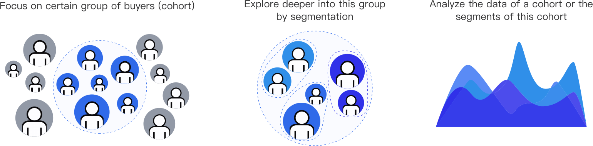

Demand Analysis
QRIO targets users such as eBay data analysts, PMs, managers, etc. They want to have a better self-service experience where they can create their own user cohorts and segments, and analyze the data based on the cohorts or segments.
